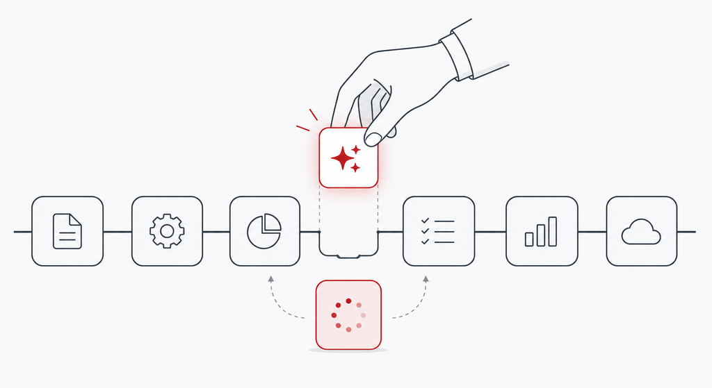
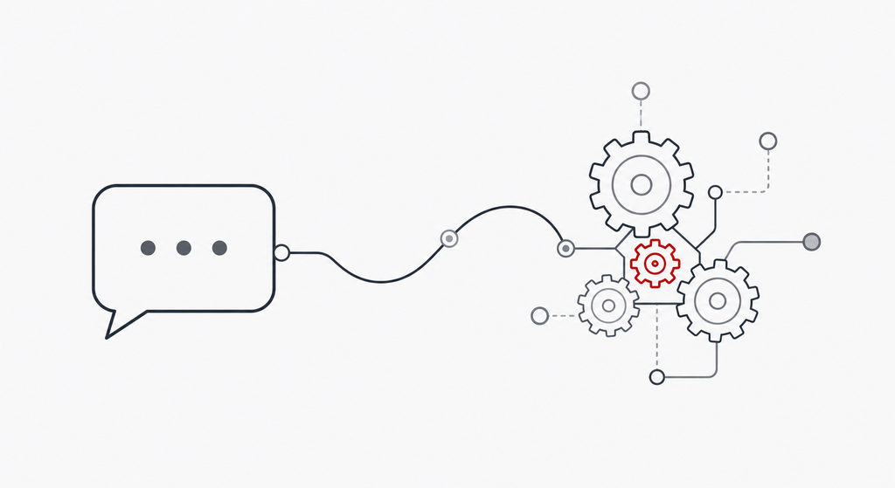
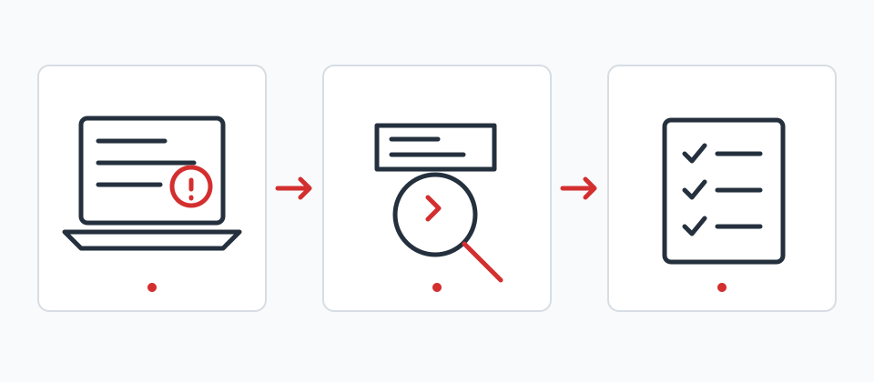

こんな相談に対応しています
使い始めのつまずき
教材と自分の画面が違う、AIへの質問がうまく伝わらない、エラーで止まってしまう。状況を一緒に切り分けます。

仕事への取り入れ方
メールや議事録、資料の下書きなど、今の作業のどこから試せるかを一緒に考えます。

小さな自動化
使い方に慣れた後は、API連携や業務の自動化も含めて、必要な支援を相談できます。
対象は個人、個人事業主、小規模事業者の方です。清水幸久が約25年のアプリケーションエンジニア経験をもとに対応します。
まずは無料相談で状況を整理
30分のオンライン面談で、使っているツール、やりたいこと、どこで止まっているかを伺います。その後の支援が必要な場合は、相談内容に合うプランを確認できます。
スポット解決
3,500円 ／1時間
特定のエラーや初期設定について、Zoomまたはチャットで対応するプランです。
継続して相談したい方へ
11,000円 ／月から
チャットで相談できる「よろず相談ライト」と、週1回の面談を含む「実践伴走メンター」があります。
各プランの内容と料金はトップページの料金表でご確認ください。
相談の進め方
- 予約サイトで無料相談の日時を選ぶ
- 30分のオンライン面談で、今の状況と目標を話す
- 必要な場合は、スポットまたは継続支援の方法を確認する

相談の進め方を図で確認できます。
LPを自分で作りたい方は、内容・期間・料金を記載したLP制作支援ページもご覧ください。
 清水幸久が相談を担当します。
清水幸久が相談を担当します。